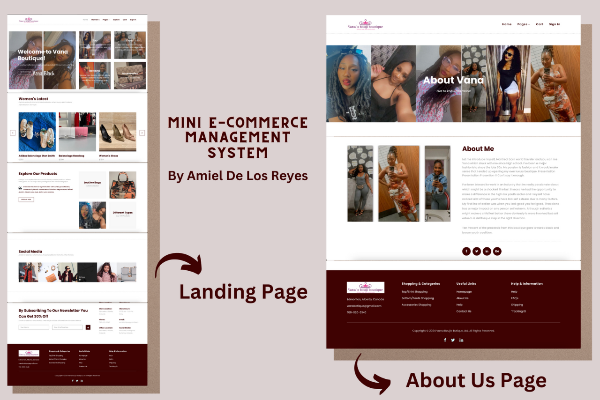
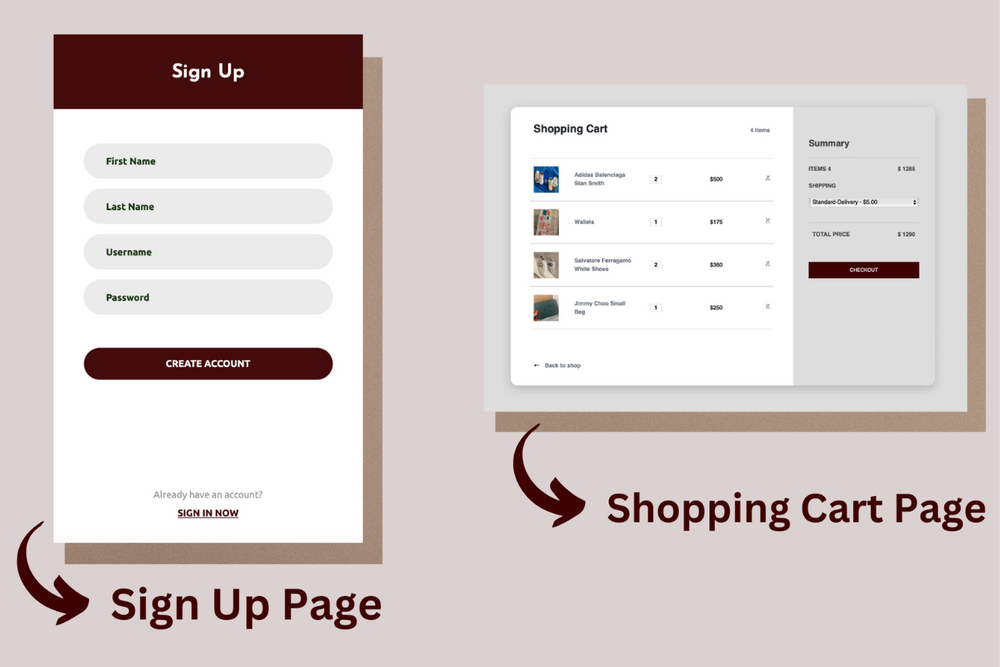

Works
Botique Management System
Portfolio
Botique Management System
Local Boutique is my personalized software solution, meticulously crafted with Python Flask and a MySQL database, with the goal of streamlining business management processes and enhancing both operational efficiency and customer satisfaction. Leveraging Flask's powerful features, I've tailored the application to meet the specific needs of clients, offering functionalities such as inventory management, customer relationship management, and seamless order processing. By deploying the application on Heroku, I ensure accessibility and reliability for users, enabling them to experience the benefits of efficient business management from anywhere.
Through Local Boutique, I've aimed to revolutionize business operations by providing a comprehensive solution that empowers users to efficiently manage their inventory, nurture customer relationships, and streamline order fulfillment processes. Utilizing the robust capabilities of Python Flask and the reliability of a MySQL database, I've developed a platform that not only meets the unique requirements of clients but also enhances their overall business performance. With deployment on Heroku, I ensure seamless accessibility and scalability, allowing users to experience the full potential of Local Boutique in optimizing their business operations.
Project Photos

